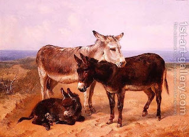

Bava Metzia 31 - What is Considered a Lost Object
How is a finder to determine whether the objects he has found is truly lost? If he found a donkey or a cow grazing by the road, this is not considered a lost object. If he found a donkey with its gear overturned, or a cow running through the vineyards, this is indeed a lost object.
If one returned an animal and it ran away, and this happened four or five times, he is still obligated to return it yet again, because it is stated "... return, you shall return them ..." For missed work he gets compensation only as a laborer. But if the stipulates his wage in court, he can get it.
Test your knowledge of the daf